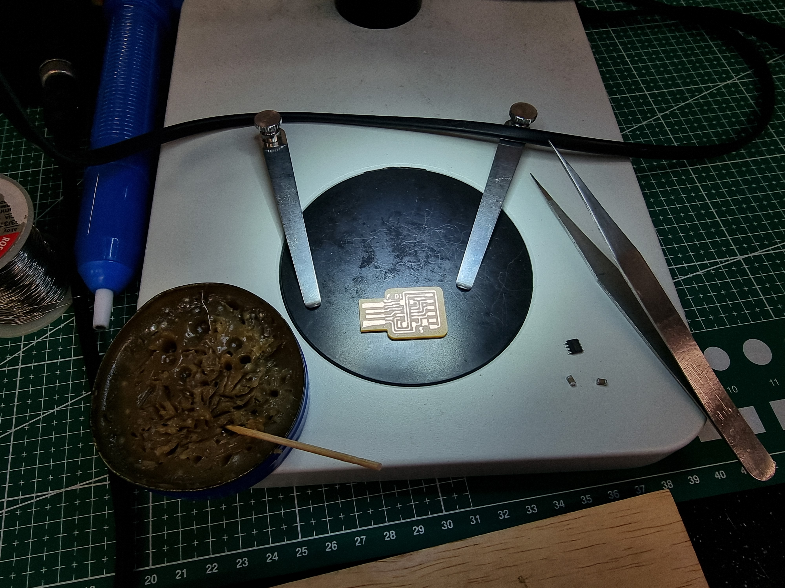

(^∇^*=) This page is rather long! Free free to select the option from the navigation bar below. (=*^∇^)
Why Electronics production
Learning to produce your own electronics allows you to customize your own electronics to fit the your own requirements.
Customized electronics is a reliable method to ensure you know the specs of your own product.
PCB G-code

I would be using Mr Steven Chew's "mod" to generate my G-code from the trace provided.
Outline Used


Setting up mod
Step 1
In case you don't quite understand what's going on, go to mod first.

Start by right clicking and select programs
Step 2

Now select "open server program"
Step 3

Now select "mill 2D PCB png" under G-code
How it should look like
FTDI's code
 |
|---|
Make sure the "mill trace" is selected before clicking calculate after uploading your FTDI trace's PNG.
The g-code would be downloaded automatically. Click here to download the nc code I got.
 |
|---|
Make sure the "mill outline" is selected before clicking calculate after uploading your FTDI outline's PNG.
The g-code would be downloaded automatically. Click here to download the nc code I got.
UDPI's code
 |
|---|
Just repeat what you did for FTDI. Click here to download the nc code I got.
Make sure the "mill outline" is selected before clicking calculate after uploading your FTDI outline's PNG.
The g-code would be downloaded automatically. Click here to download the nc code I got.
PCB Milling
Machine Setup
The following steps are to show you(and me) the tools and steps to milling your own PCB using stepcraft 420.
Tool used
You will need double-sided tape to sick the copper plate onto the MDF secrificial block.
A box cutter to cut the tape and scrape off excess copper after milling.
A wranch to mount the bits onto the router, apporate drill-bits and a copper plate.
 |
|---|
The bit on the left is for milling out the trace of the PCB, always mill out the tracing before the outline.
The drill bit on the right is for milling out the outline. It's importent to switch on the machine before running as the tip is easily broken.
Use NCviewer to check your g-code's tool path to ensure you have generated the g-code correctly.
Mistakes
Improperly secured

If the copper plate is not secured propelly onto the MDF board, vibrations from the machine may dislodge the part and damage the drill bit or the pcb.
In my case, I have damaged the USB area and had fat areas on my PCB.
Clean-up and soldering SMTS
Cleaning up PCB
This potion would teach and show you how to process your freshly milled PCB from the one above to the one below.
This is my completed part.
What are SMTs
Surface-mount technology (SMT) is basically a component assembly technology related to printed-circuit boards wherein the components are attached and connected on the surface.
Preparing for soldering
Remove the burr from the milled pcb using a high grit sandpaper carfully. Keep in mind to be careful as thin copper connecters may be stripped away as well.
Remove excessive copper on pcbs that are going to be connected to your computer as it may short circuit or damage your connected device.
Soldering

This process is a lot easier if you have a soldering station equiped with a microscope.
Prepare the SMTs and tools needed for your circuit.
It's better to prepare a small pan for the SMTs as it is easy to misplace the component.
Keep in mind of the layout of certain compoments. A good rule of tumb is to check your component and position twice before soldering.
For components with mutiple solder points, alternate between each ends so the position does not get shifted easily.
If are shit not good at soldering,watch the video above!
 |
|---|